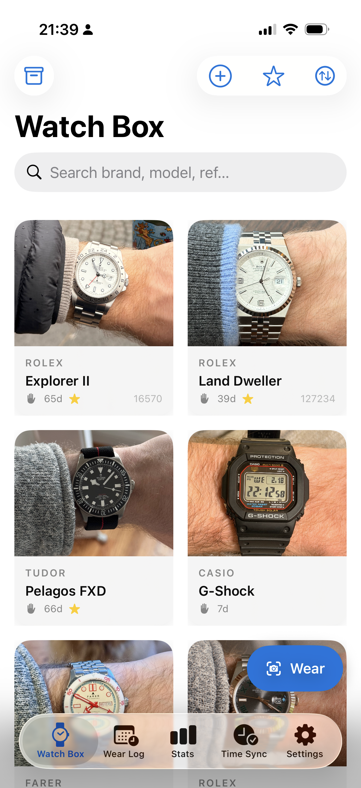
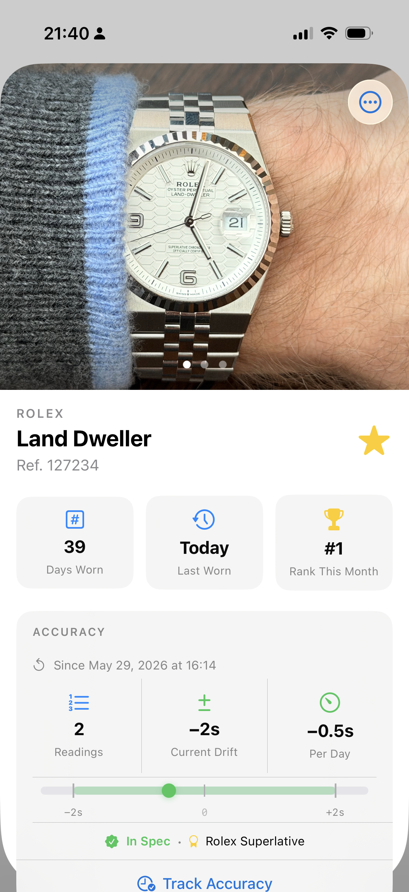
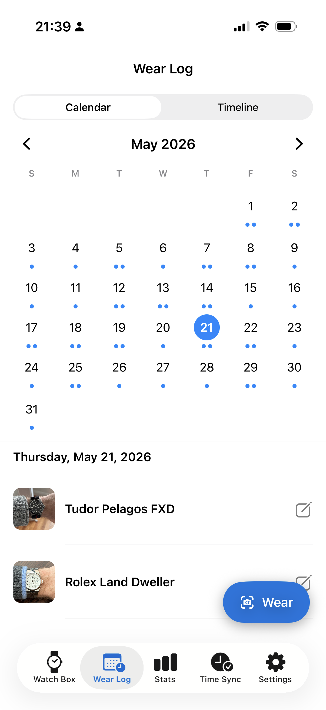
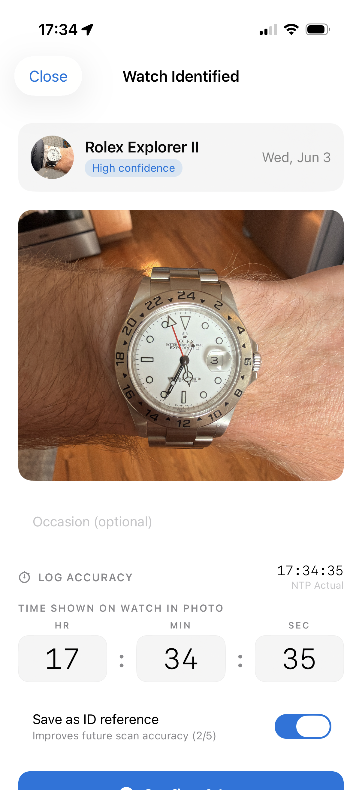

Your modern watch companion.
Track your collection, log wear, measure real-world accuracy, and set every watch to atomic time.

Organization, first and foremost.
Store photos, references, movement details, purchase history, service records, and notes.
Sort by brand, most worn, newest additions, or favorites. Everything where you'd expect it.
Get a head start. Use the Collection Builder to add your watches on the web, save the file to iCloud, and import it into Lumed in one tap once installed.

Discover what actually gets wrist time.
Log every watch you wear. Understand your collection through real usage instead of assumptions.
Surface neglected watches, favorites, and long-term trends across 30 days, 90 days, or all time.

Know exactly how your watch is performing.
Take a photo of your watch. Lumed compares it against atomic time, calculates drift, and tracks performance over weeks.
COSC, METAS, Rolex Superlative, or your own spec. No spreadsheet required.
Track, Measure, and log with one photo
Snap a single photo and Lumed recognizes which watch from your collection you're wearing, logs the wear, and calculates accuracy against an NTP server time — all in one step.
Meant to reduce friction to make tracking and logging as easy and seemless as possible.
Included with Lumed Chronometer. The one time purchase that turns every wrist-check into a complete record.

Set every watch to the same source of truth.
Lumed synchronizes against NTP and provides a millisecond-accurate reference clock. Whether you're setting a vintage Speedmaster or a COSC-certified diver, you start from the same precise baseline.
Spreadsheet-level data, built for effortless daily tracking.
Download Lumed and start building a better record of your collection.